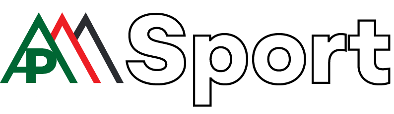

<ion-header no-shadow no-border>
  <ion-navbar color="dark">
    <button ion-button menuToggle color="yellow">
      <ion-icon name="menu"></ion-icon>
    </button>
    <ion-title> </ion-title>
  </ion-navbar>
</ion-header>
<ion-content no-bounce>
  <super-tabs id="mainTabs" [config]="{ sideMenu: 'left' }" scrollTabs toolbarColor="light" toolbarBackground="dark" indicatorColor="yellow" badgeColor="yellow" (tabSelect)="onTabSelect($event)">
    <super-tab [swipeBackEnabled]="true" [root]="page1" [title]="showTitles? 'Futboll' : ''" id="page1"></super-tab>
    <super-tab [root]="page2" [title]="showTitles? 'Shqipëri' : ''"  id="page2"></super-tab>
    <super-tab [root]="page3" [title]="showTitles? 'UEFA' : ''"  id="page3"></super-tab>
    <super-tab [root]="page4" [title]="showTitles? 'Kombëtarja' : ''" id="page4"></super-tab>
    <super-tab [root]="page5" [title]="showTitles? 'Albanian Stars' : ''"  id="page5"></super-tab>
    <super-tab [root]="page6" [title]="showTitles? 'International' : ''"  id="page6"></super-tab>
    <super-tab [root]="page7" [title]="showTitles? 'Gossip' : ''"  id="page7"></super-tab>
    <super-tab [root]="page8" [title]="showTitles? 'Të tjera' : ''"  id="page8"></super-tab>
    <!-- more tabs for testing -->
    
  </super-tabs>
</ion-content>
